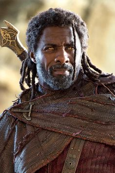

Marvel Cinematic Universe: The Fallen Heroes
In honor for the fallen beloved characters in the Marvel's Cinematic Universe

Fallen Marvel Heroes in the MCU

Iron Man

Loki

Heimdall

Black Widow
It was in late 2022 when I became a true fan of the Marvel Cinematic Universe (MCU). I watched all the MCU movies one after another and was completely hooked. The MCU transported me to a different universe and I fell in love with it.
One of the most thrilling moments for me was in Avengers: Civil War when they introduced my favorite character, the Black Panther. I quickly became attached to the character and his powerful presence on the screen.
Fast forward to November 2022, and the release of the next Black Panther movie was just around the corner. However, my excitement was short-lived when I learned that my favorite character had died. I was in disbelief and immediately searched Google to understand what had happened. I was heartbroken when I learned that the Black Panther character was killed off because the actor who portrayed him, Chadwick Boseman, had passed away in real life. This news left me in tears, and until now, I haven't been able to bring myself to watch the new Black Panther movie without him.
Despite the loss of my favorite character, my love for the MCU remains strong. The rich storylines, dynamic characters, and action-packed adventures have captivated me and I can't wait to see what the future holds for this amazing universe.
--Jemuel Repoylo